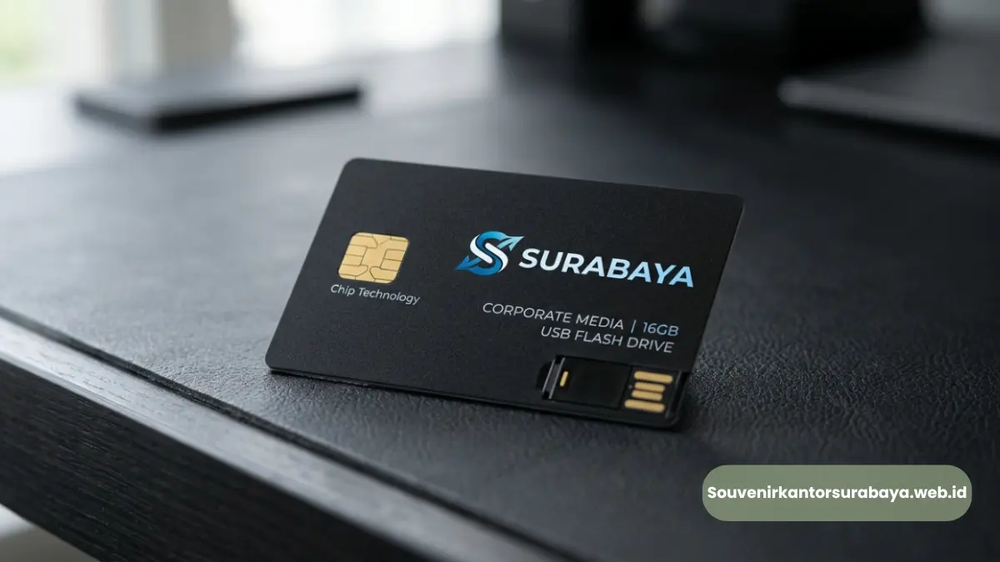
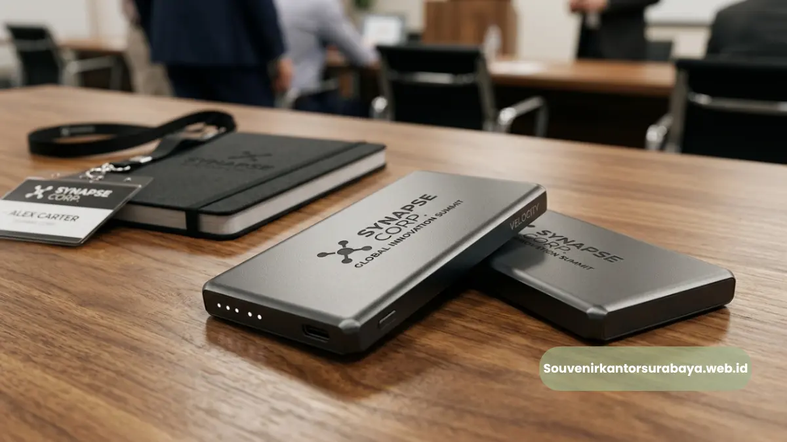

Flashdisk kartu kapasitas besar sebagai souvenir kantor di Surabaya.
- Apa Itu Flashdisk Kartu Kapasitas Besar untuk Souvenir Kantor?
- Kenapa Kapasitas Besar Lebih Disukai untuk Kebutuhan Korporat?
- Berapa Kapasitas Flashdisk Kartu yang Ideal untuk Souvenir Kantor Surabaya?
- Apakah Kapasitas Besar Mempengaruhi Harga Souvenir Kantor?
- Keunggulan Flashdisk Kartu Custom Logo sebagai Souvenir Kantor
- Bagaimana Proses Custom Logo pada Flashdisk Kartu Dilakukan?
- Penggunaan Flashdisk Kartu untuk Kebutuhan Kantor di Surabaya
- Acara Apa Saja yang Cocok Menggunakan Flashdisk Kartu sebagai Souvenir?
- Kesalahan Umum Saat Memilih Flashdisk Kartu untuk Souvenir Kantor
- Apakah Waktu Produksi Perlu Dipertimbangkan Sebelum Acara?
- Tips Memastikan Kualitas Flashdisk Kartu Sebelum Dipesan dalam Jumlah Besar
- Kesimpulan
Flashdisk kartu kapasitas besar untuk kantor Surabaya adalah USB tipis berbentuk kartu dengan kapasitas 16GB hingga 128GB, ideal untuk souvenir korporat ber-custom logo.
- Flashdisk kartu tersedia dalam kapasitas besar mulai 16GB sampai 128GB sehingga cocok untuk penyimpanan dokumen kerja maupun materi presentasi.
- Bentuknya setipis kartu ATM sehingga mudah disimpan di dompet dan terasa premium saat dibagikan sebagai souvenir kantor.
- Permukaan kartu dapat dicetak custom logo perusahaan secara penuh warna, menjadikannya media branding yang efektif.
- Cocok dipakai untuk seminar, gathering, hadiah klien, maupun merchandise ulang tahun perusahaan di Surabaya.
- Pemesanan dapat dilakukan langsung melalui souvenirkantorsurabaya.web.id dengan proses custom logo dan pengiriman ke seluruh Surabaya.
Banyak tim procurement dan HRD di Surabaya bertanya, apa sebenarnya kelebihan flashdisk kartu dibanding flashdisk model konvensional untuk kebutuhan souvenir kantor.
Jawabannya terletak pada tiga hal utama: bentuk yang ramping menyerupai kartu identitas, kapasitas penyimpanan yang jauh lebih besar dari model lama, dan area cetak logo yang lebih luas untuk kebutuhan branding.
Ketiga faktor ini membuat flashdisk kartu menjadi pilihan populer sebagai merchandise korporat di Surabaya, khususnya bagi perusahaan yang ingin memberikan kesan profesional sekaligus fungsional kepada klien maupun karyawan.
Penyimpanan data cenderung lebih lama disimpan dan digunakan dibanding souvenir dekoratif semata. Dua data ini menjadi dasar mengapa banyak perusahaan di Surabaya mulai beralih ke flashdisk kartu kapasitas besar sebagai pilihan utama souvenir kantor mereka.
Baca Juga
Apa Itu Flashdisk Kartu Kapasitas Besar untuk Souvenir Kantor?
Flashdisk kartu adalah perangkat penyimpanan data berbentuk pipih menyerupai kartu nama dengan konektor USB tersembunyi dan kapasitas simpan mulai 16GB hingga 128GB.
Secara desain, flashdisk kartu dibuat menyerupai kartu identitas atau kartu nama dengan ketebalan yang sangat tipis.
Konektor USB pada perangkat ini biasanya dapat dilipat, ditarik, atau diputar dari badan kartu sehingga tidak memerlukan tutup terpisah yang mudah hilang. Material yang umum digunakan adalah plastik PVC atau bahan komposit tahan gores, sama seperti bahan pembuatan kartu ATM, sehingga cukup kuat untuk dibawa sehari-hari di dompet maupun kantong kerja.
Untuk kebutuhan kantor di Surabaya, pilihan kapasitas besar menjadi nilai tambah tersendiri. Karyawan maupun klien tidak hanya menerima souvenir simbolis, tetapi juga perangkat yang benar-benar dapat menyimpan dokumen kerja, materi presentasi, hingga arsip data perusahaan dalam jumlah banyak.
Kenapa Kapasitas Besar Lebih Disukai untuk Kebutuhan Korporat?
Kapasitas besar disukai karena kebutuhan penyimpanan dokumen kerja modern terus meningkat, sehingga flashdisk 32GB ke atas dianggap lebih relevan dibanding kapasitas kecil.
Dokumen presentasi korporat saat ini sering kali menyertakan video, foto resolusi tinggi, dan file desain berukuran besar. Kapasitas kecil di bawah 8GB dianggap kurang memadai untuk kebutuhan tersebut. Karena itu, banyak perusahaan di Surabaya memilih kapasitas 32GB atau 64GB sebagai standar souvenir kantor mereka agar tetap relevan dengan kebutuhan digital masa kini.
Berapa Kapasitas Flashdisk Kartu yang Ideal untuk Souvenir Kantor Surabaya?
Kapasitas 32GB dan 64GB paling sering dipilih perusahaan di Surabaya karena menyeimbangkan kebutuhan penyimpanan dengan efisiensi anggaran pengadaan souvenir dalam jumlah besar.
Pemilihan kapasitas biasanya disesuaikan dengan tujuan pemberian souvenir. Untuk kebutuhan internal seperti hadiah karyawan atau merchandise acara tahunan, kapasitas 16GB hingga 32GB umumnya sudah mencukupi. Sementara untuk hadiah eksklusif kepada klien VIP atau mitra bisnis strategis, banyak perusahaan di Surabaya memilih kapasitas 64GB hingga 128GB agar memberikan kesan lebih premium.
Apakah Kapasitas Besar Mempengaruhi Harga Souvenir Kantor?
Kapasitas lebih besar umumnya memengaruhi harga per unit, namun perbedaan biaya dapat diseimbangkan dengan pemesanan dalam jumlah besar melalui skema pemesanan korporat.
Semakin besar kapasitas penyimpanan, umumnya biaya produksi chip memori juga meningkat. Namun, untuk pemesanan dalam jumlah besar, banyak penyedia souvenir kantor menawarkan skema harga yang lebih efisien per unit.
Tim procurement disarankan mengonsultasikan kebutuhan jumlah dan kapasitas terlebih dahulu agar mendapatkan penawaran yang paling sesuai dengan anggaran perusahaan.
Keunggulan Flashdisk Kartu Custom Logo sebagai Souvenir Kantor
Keunggulan utamanya terletak pada area cetak logo yang luas, tampilan profesional menyerupai kartu identitas, dan fungsi penyimpanan data yang dipakai berulang kali oleh penerima.
Berbeda dengan souvenir dekoratif yang hanya dipajang sesekali, flashdisk kartu digunakan secara aktif dalam aktivitas kerja sehari-hari.
Setiap kali digunakan, logo perusahaan yang tercetak pada permukaan kartu akan terlihat, sehingga secara tidak langsung memperkuat brand recall di lingkungan kerja klien maupun karyawan.
Selain itu, proses cetak custom logo pada flashdisk kartu umumnya menggunakan teknik cetak penuh warna (full color printing) sehingga desain logo, tagline, maupun elemen visual korporat dapat ditampilkan secara detail dan tajam, tidak seperti metode ukir atau emboss yang terbatas pada satu warna.

Proses custom logo pada flashdisk kartu menghasilkan cetakan tajam yang memperkuat branding perusahaan.
Bagaimana Proses Custom Logo pada Flashdisk Kartu Dilakukan?
Proses custom logo dilakukan dengan mengirimkan file desain logo resmi perusahaan, kemudian dicetak penuh warna pada permukaan kartu sebelum proses produksi massal dimulai.
Tim procurement biasanya diminta menyiapkan file logo dalam format vektor agar hasil cetak lebih tajam. Setelah desain disetujui melalui proof digital, proses produksi dapat berlanjut ke tahap pencetakan dan perakitan komponen memori ke dalam badan kartu.
Penggunaan Flashdisk Kartu untuk Kebutuhan Kantor di Surabaya
Flashdisk kartu banyak digunakan perusahaan di Surabaya untuk souvenir seminar, hadiah gathering tahunan, merchandise klien, dan media promosi acara korporat lainnya.
Sebagai kota dengan aktivitas bisnis dan industri yang padat, Surabaya memiliki kebutuhan tinggi terhadap souvenir korporat yang praktis dikirim dalam jumlah besar ke berbagai lokasi acara, mulai dari hotel bisnis di kawasan pusat kota hingga gedung perkantoran di kawasan industri Surabaya Timur dan Barat.
Acara Apa Saja yang Cocok Menggunakan Flashdisk Kartu sebagai Souvenir?
Seminar bisnis, workshop internal, gathering akhir tahun, pelatihan karyawan, dan kunjungan klien adalah acara yang paling umum menggunakan flashdisk kartu sebagai souvenir kantor.
Pada acara seminar dan workshop, flashdisk kartu sering digunakan untuk membagikan materi presentasi kepada peserta sekaligus berfungsi sebagai souvenir yang mereka bawa pulang.
Sementara pada acara gathering atau perayaan internal, flashdisk kartu menjadi simbol apresiasi perusahaan kepada karyawan dengan tetap menonjolkan identitas brand.
Kesalahan Umum Saat Memilih Flashdisk Kartu untuk Souvenir Kantor
Kesalahan umum meliputi memilih kapasitas terlalu kecil, mengabaikan kualitas material kartu, dan tidak mempertimbangkan waktu produksi sebelum acara berlangsung.
Banyak tim procurement terburu-buru memilih kapasitas kecil demi menekan anggaran, namun berisiko membuat souvenir terasa kurang bernilai di mata penerima.
Selain itu, memilih material kartu yang terlalu tipis dan mudah patah juga menjadi keluhan umum yang memengaruhi citra profesional perusahaan pemberi souvenir.
Apakah Waktu Produksi Perlu Dipertimbangkan Sebelum Acara?
Waktu produksi wajib dipertimbangkan karena proses custom logo dan perakitan memori membutuhkan waktu tertentu sebelum souvenir siap dikirim ke lokasi acara.
Pemesanan yang dilakukan terlalu mepet dengan jadwal acara berisiko membuat souvenir belum siap tepat waktu. Karena itu, disarankan melakukan pemesanan flashdisk kartu custom logo setidaknya beberapa minggu sebelum tanggal acara berlangsung agar proses desain, produksi, dan pengiriman berjalan lancar.
Tips Memastikan Kualitas Flashdisk Kartu Sebelum Dipesan dalam Jumlah Besar
Pastikan kualitas dengan meminta sampel produk, mengecek kecepatan transfer data, dan memverifikasi ketahanan material kartu sebelum melakukan pemesanan dalam jumlah besar.
Meminta sampel sebelum pemesanan massal membantu tim procurement menilai langsung kualitas cetak logo, kekuatan konektor USB, dan kenyamanan bentuk kartu saat digenggam.
Langkah ini penting agar hasil akhir sesuai ekspektasi sebelum diproduksi dalam jumlah besar untuk kebutuhan seluruh karyawan atau klien.

Hawa Nadira
Tim penulis CorporateGifts ID berfokus pada strategi souvenir kantor, merchandise korporat, dan inovasi brand untuk klien B2B.
Keahlian: Branding perusahaan, produksi souvenir, paket event, desain materi promosi.
Artikel Terkait

Corporate Powerbank Slim Fast Charging Seminar
Corporate powerbank slim fast charging menjadi souvenir seminar dan gathering perusahaan di Surabaya yang fungsional.
Baca Selengkapnya
Paket Seminar Kit Lengkap Surabaya
Paket seminar kit lengkap untuk kebutuhan acara korporat dengan isi custom terlengkap dan pengiriman cepat.
Baca Selengkapnya
Merchandise Perusahaan Promosi
Ide merchandise korporat yang efektif untuk meningkatkan visibilitas brand dan impresi profesional.
Baca Selengkapnya